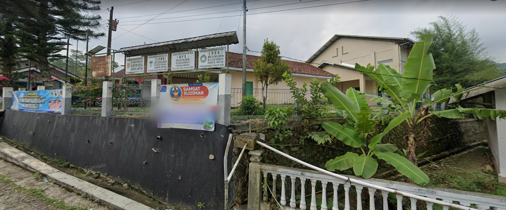
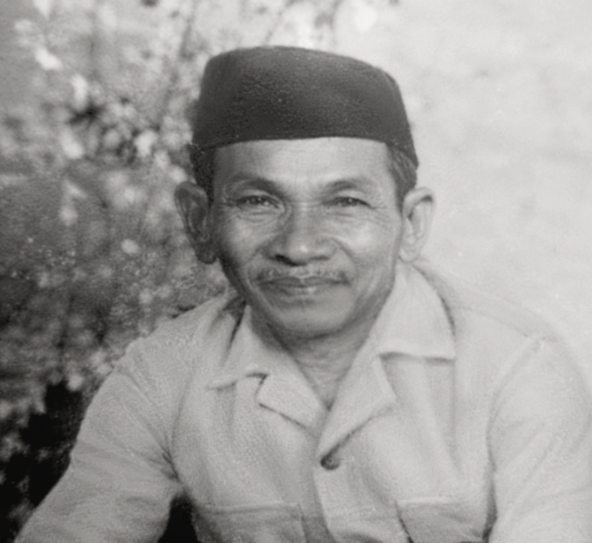
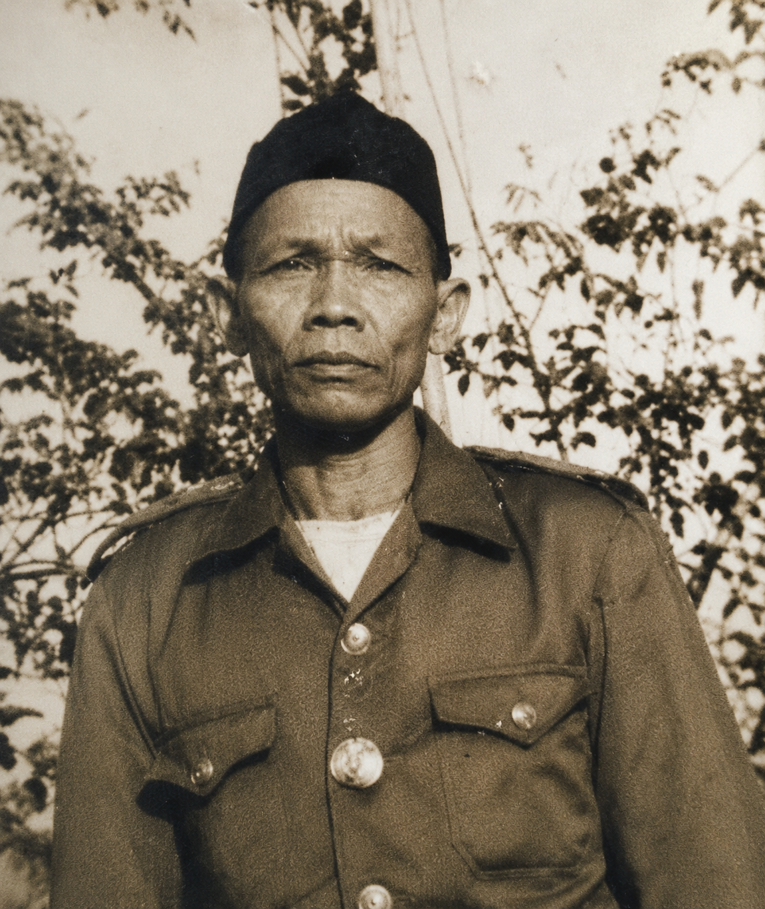
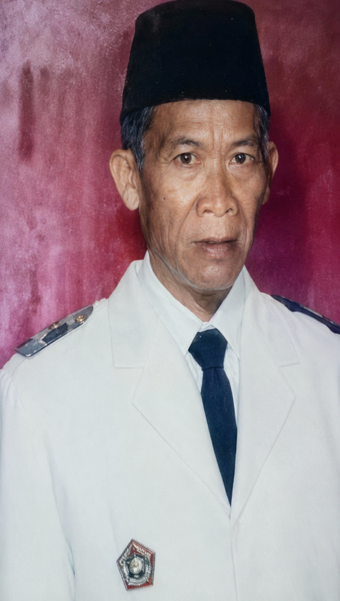
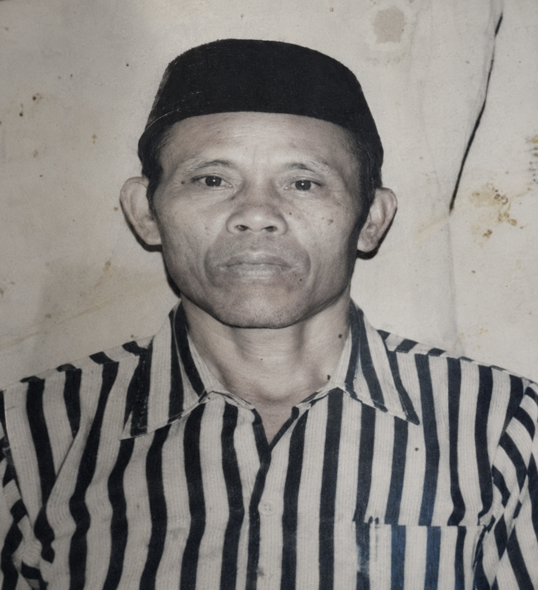
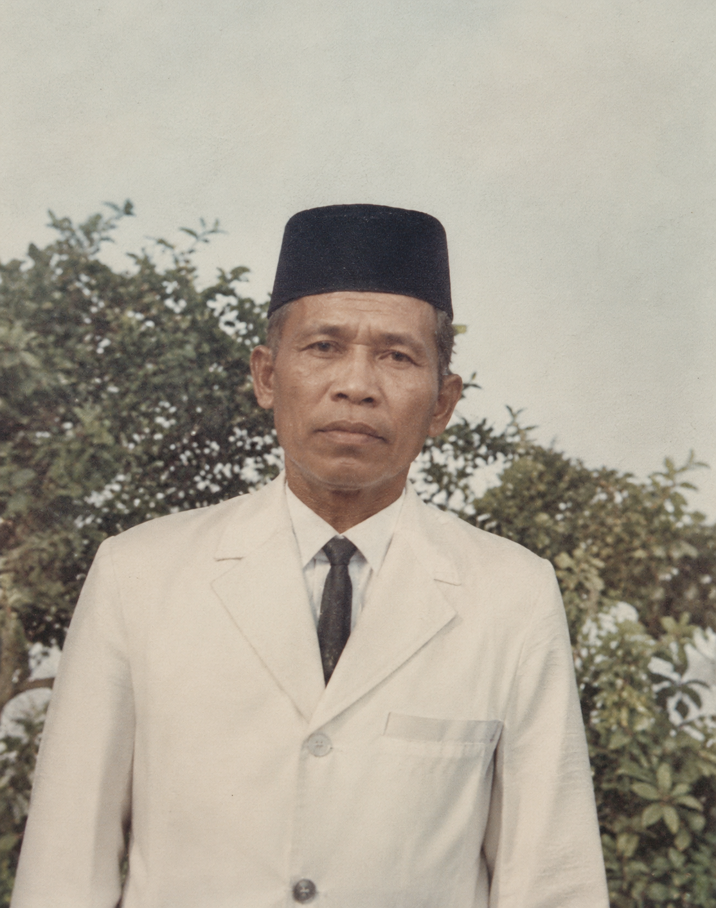
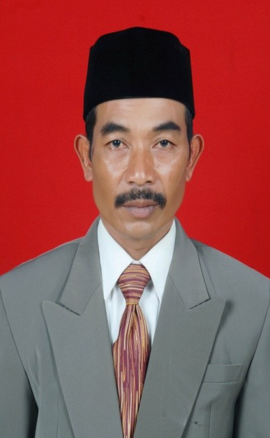
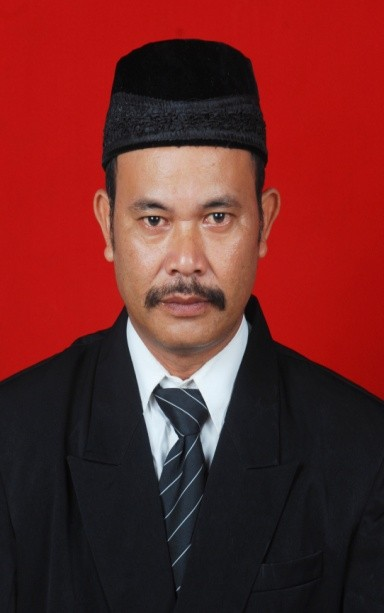

Mengenal perjalanan panjang Desa Jebengplampitan dari masa awal pembentukan hingga menjadi desa yang terus berkembang, maju, dan tetap menjaga budaya tradisional masyarakat.
Jelajahi SejarahCerita sejarah yang berkembang secara turun-temurun di masyarakat Desa Jebengplampitan

Desa Jebengplampitan diperkirakan berdiri pada masa sejarah islam di Jawa dimana menurut serita dari mulut ke mulut desa Jebengplampitan berasal dari Kata Jabang ( Orang Asing ) dimana orang tersebut adalah murid dari Sunan kali Jaga Tunggal seperguruan dengan Cakra jaya atau Sunan Geseng pada tahun yang tidak diketahui sejarahnya.
Diperkirakan berdiri pada masa abad 16 sehingga desa Jebengplampitan ini lahir sebelum Indonesia merdeka pada tahun 1945.
Hingga saat ini pemerintah desa Jebengplampitan belum menemukan dokumen dan bukti sejarah yang menyebutkan tahun berdirinya desa Jebengplampitan. Sejarah desa hanya bisa dirunut berdasarkan cerita lisan yang berkembang secara turun menurun di tengah masyarakat.
Menurut riwayat yang berkembang di masyarakat, pendiri desa adalah sosok pengembara yang berpindah-pindah dan akhirnya menetap di wilayah yang sekarang menjadi Desa Jebengplampitan.
Penulisan sejarah ini berdasarkan cerita turun-temurun dari para tokoh masyarakat dan perangkat desa terdahulu.
Daftar kepala desa dan perkembangan Desa Jebengplampitan
Patra menggala adalah ayah dari karta Sentana dan karta miharjo. Patra menggala yang menjadi kades periode 1920 – 1930 hasil dari masa kepemimpinan beliau tidak diketahui hasilnya.

Lahir di wonosobo pada tahun 1907. Mulai menjabat Kepala Desa Tahun 1925 – 1940. Pada masa kepemimpinanya mulai merintis adanya pasar desa Jebengplampitan yang pada saat ini masih ada.

Pada masa kepemimpinanya mulai menata wilayah desa Jebengplampitan, pembangunan jalan penghubung antar desa, berdirinya rumah sekolah dasar sebagai sarana pendidikan masyarakat.

Menjadi PJ pertama Kepala Desa Jebengplampitan untuk sementara waktu karena kekosongan jabatan kepala desa.
Suwarjo menjabat Kepala Desa selama 8 bulan.
Desa mulai berbenah di bidang pembangunan khususnya infrastruktur, pelebaran jalan utama, pembangunan lapangan, pendirian balai desa, dan pemindahan gedung SD.

Berhasil merehab gedung SD yang semula terbuat dari papan menjadi bangunan tembok semen melalui program Inpres.

Masa kepemimpinan Sukijo menghasilkan berbagai pembangunan penting seperti jembatan, SMP Negeri 2, listrik masuk desa, pengaspalan jalan, serta pembangunan tempat ibadah.
Menjabat selama tiga tahun sebagai kepala desa Jebengplampitan.

Fokus pada pembangunan jalan antar dukuh dan pengembangan infrastruktur desa bekerja sama dengan TMMD Manunggal.

Pada masa kepemimpinanya dilakukan pembangunan rabat beton, tambahan gedung TK, rehab los pasar desa, dan rehab jembatan gantung desa.
Fokus pada pengembangan dan penyempurnaan pembangunan desa yang telah dilakukan pada periode sebelumnya.